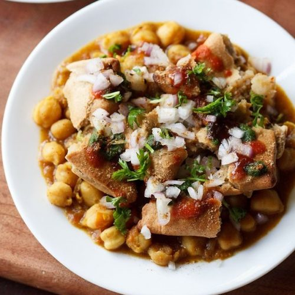

CHole Samosa Chaat

Description
Samosa chaat is a lip-smacking chaat made with samosa, chickpea curry, various chutneys and spices.
Ingredients
- 1 Chole Curry
- 1 and a half cup All Purpose Flour
- 2-3 Mashed Potatoes
- 1/2 tsp Chaat Masala
- to taste Salt
- 1/2 tsp Red Chilli Powder
- 1/2 tsp Jeera Powder
- 1/2 tsp Garam Masala
- 1 tbsp Mint Chutney
- 2 tbsp Dahi
- 1 tbsp Tamarind Chutney
- 1 tbsp Sev
- 1 tbsp Coriander Leaves
- 1 tbsp Coriander Leaves
Steps
- Firstly, knead a dough by using all purpose flour. Once done, set aside.
- Then for the samosa filling, mash potatoes and add all the dry ingredients mentioned in the ingredients list above.
- Take a small portion from the dough, roll it out, and fill it with aloo mixture.
- Heat oil in a pan and deep fry the samosas.
- To assemble the chaat, smash the samosa, pour chole over it along with chutneys and dahi.
- Sprinkle some pomegranate kennels, sev and garnish with coriander leaves
- Your chaat is ready!